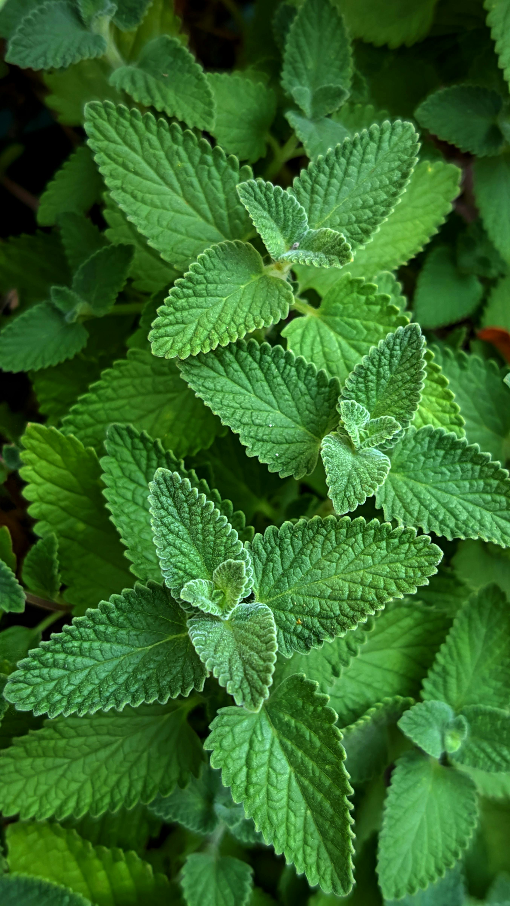
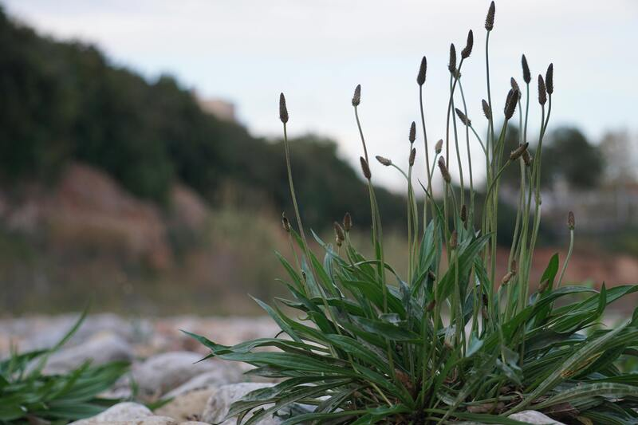
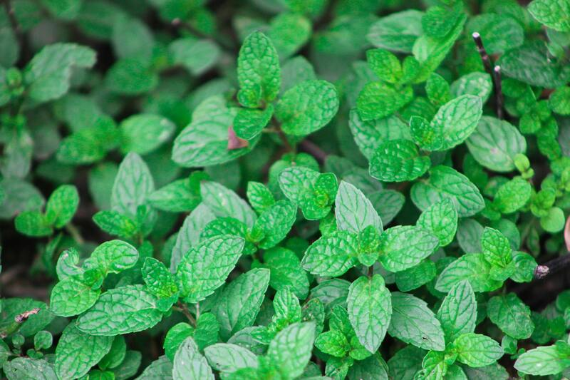
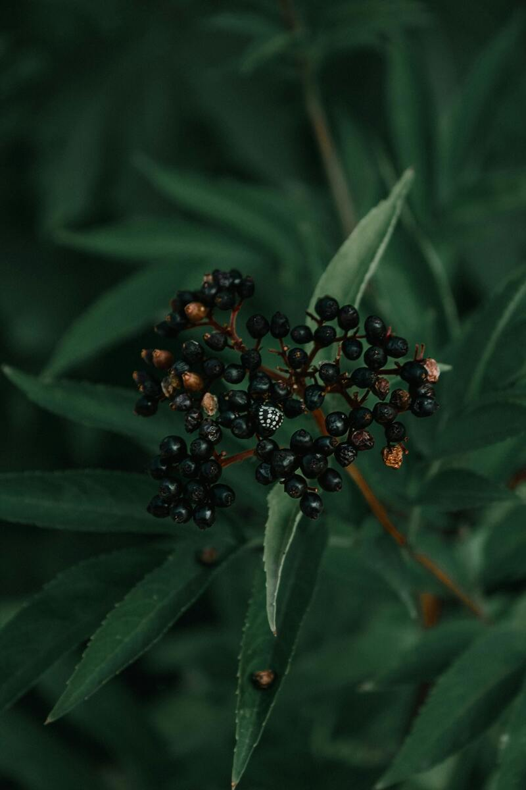

Saberes ancestrales de comunidades indígenas de Colombia y América

Sus flores intensas (amarillo a naranja) se usan para cicatrizar heridas, tratar la piel irritada y como antiinflamatorio.
Usada por comunidades Nasa para dolores estomacales, gases y como sedante suave en niños con cólicos.


El Aloe vera es pilar de la medicina Zenú: cicatrizante, quemaduras, cabello y gastritis.

Estimulante natural que mejora la memoria y la circulación. Usado en limpiezas energéticas por el pueblo Arhuaco.

Potente antioxidante y antimicrobiano. Las comunidades Embera lo usan para infecciones respiratorias y digestivas.
Una planta conocida principalmente por sus propiedades digestivas, antiespasmódicas y emenagogas..

Es una planta medicinal conocida principalmente por ser uno de los diuréticos naturales más potentes.

Planta aromática perenne de la familia de la menta, famosa por sus propiedades relajantes, ansiolíticas y digestivas.

Planta herbácea perenne, común y silvestre, reconocida por sus hojas anchas y ovaladas en roseta y espigas florales.

Taraxacum officinale: diurético, depurativo hepático y antiinflamatorio usado por el pueblo Sikuani.

Zingiber officinale: antiemético, antinflamatorio y circulatorio. Esencial en la medicina del pueblo Ticuna.

Es una planta aromática con olor a limón que se usa para hacer té medicinal o sazonar comidas..

Hierba de sabor fuerte y picante, con tallos rojizos y mucho mentol.


Planta medicinal ampliamente utilizada para fortalecer el sistema inmunológico, aliviar síntomas de resfriados, gripes, tos y congestión nasal.

Una planta aromática originaria de América, usada ancestralmente en la medicina tradicional y la cocina.

Aromática utilizada por sus propiedades medicinales digestivas, carminativas (reduce gases) y expectorantes.

Ideal para aliviar gases (flatulencias), hinchazón abdominal, digestiones pesadas y mejorar la salud respiratoria (tos).

Hierba aromática culinaria y medicinal de la familia de las mentas, originaria de Asia tropical.
Moringa oleifera: multivitamínica, antibacteriana y reconstituyente nutricional usada en comunidades amazónicas.

La hoja de coca es una planta andina con múltiples usos tradicionales que no deben confundirse con la droga procesada.

Planta aromática mediterránea cuyas hojas se usan principalmente en la cocina como condimento y en la medicina natural.

Arbusto perenne aromático valorado por sus propiedades medicinales antisépticas, balsámicas y digestivas.

Es una hierba aromática usada para sazonar comidas y mejorar la digestión. Sirve para dar sabor fresco y desintoxicar el cuerpo.

Justicia spicigera: depurativa de la sangre, antianémica y usada para problemas de piel por pueblos de Mesoamérica.

Arnica montana: antiinflamatoria y analgésica tópica para golpes y torceduras. Muy extendida en los Andes.

Originaria del Mediterráneo, se utiliza globalmente tanto en la gastronomía como en la medicina tradicional.

Es una planta silvestre de la familia de las solanáceas que crece de forma espontánea en todo el mundo.

Es una planta medicinal amarga que mejora la digestión, elimina parásitos y ayuda al hígado..

Arbusto aromático de origen sudamericano, famoso por su intenso olor a limón y sus propiedades medicinales.

Su pulpa destaca por sus propiedades medicinales para tratar la tos y afecciones respiratorias.

Es una planta silvestre tropical conocida por sus pelos urticantes que causan ardor y ronchas al contacto.
La canela es una especia aromática que se obtiene de la corteza interna de varias especies de árboles del género Cinnamomum.

Planta medicinal perenne conocida por sus propiedades calmantes, digestivas y antiinflamatorias.

Una planta aromática perenne del Mediterráneo, utilizada como condimento culinario y hierba medicinal.